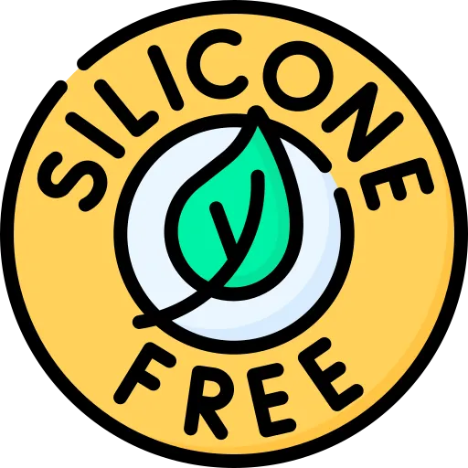
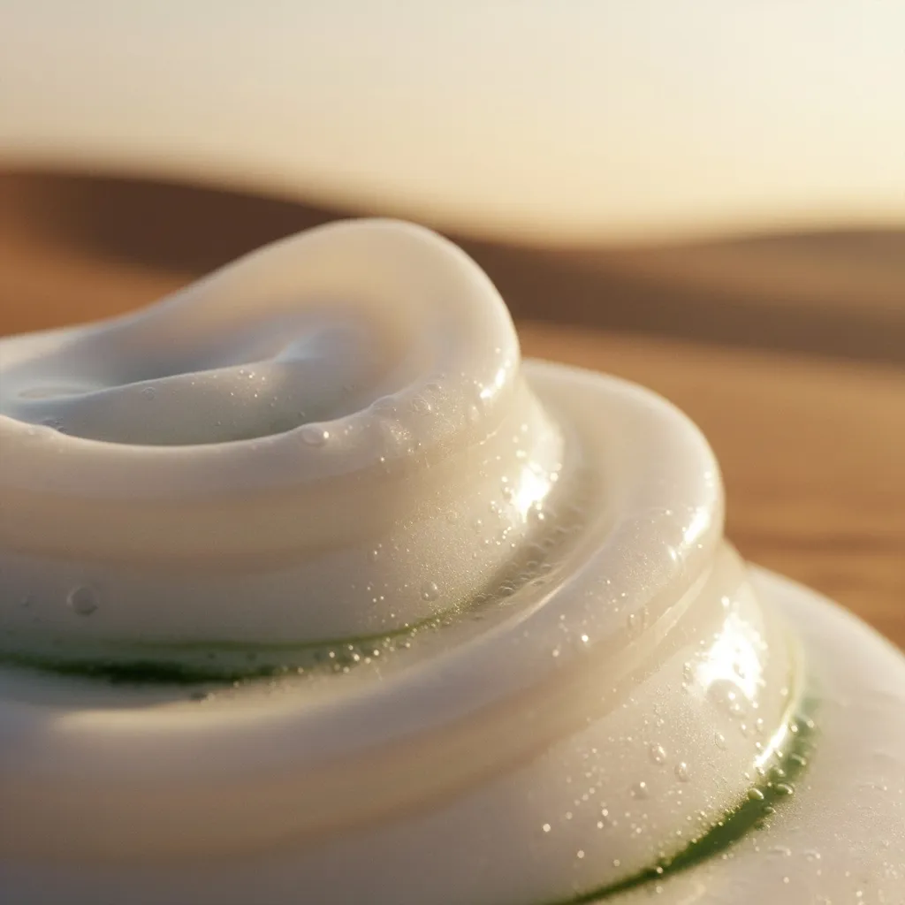
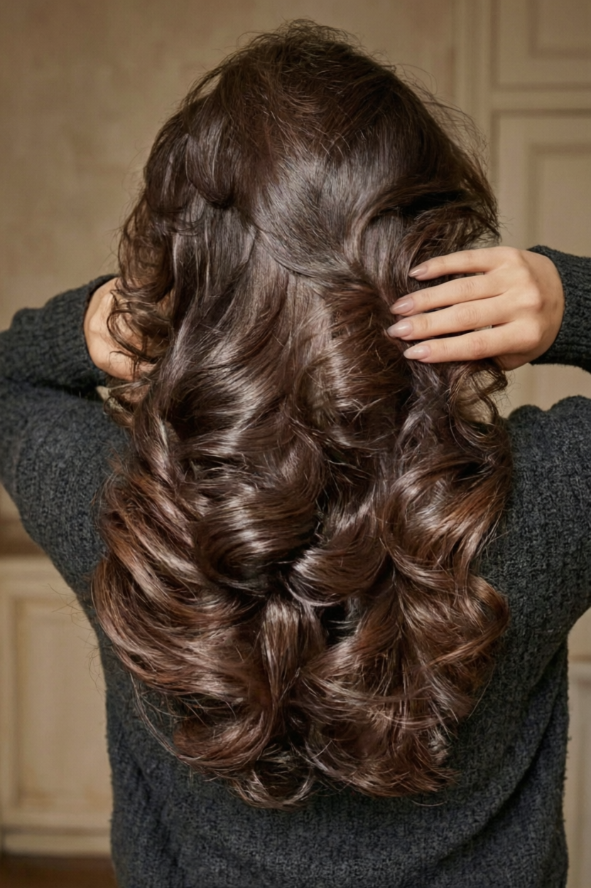
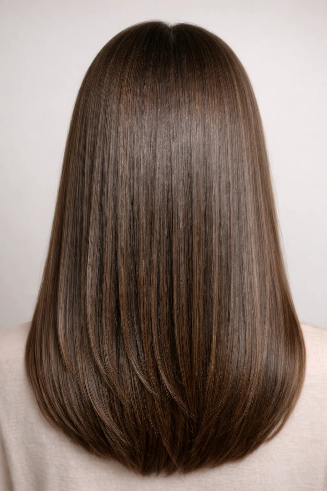
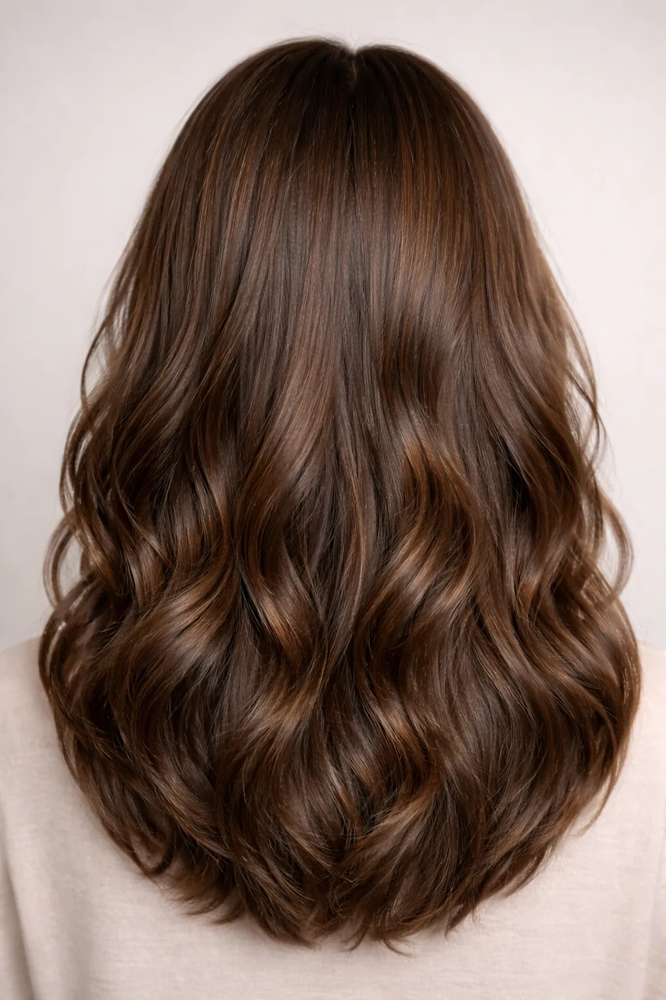
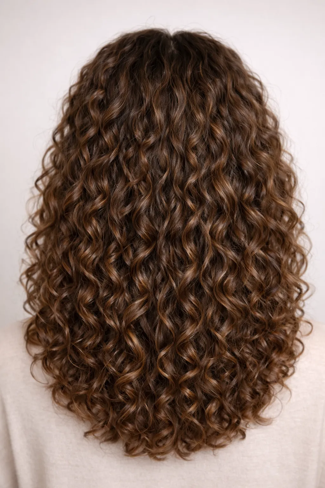
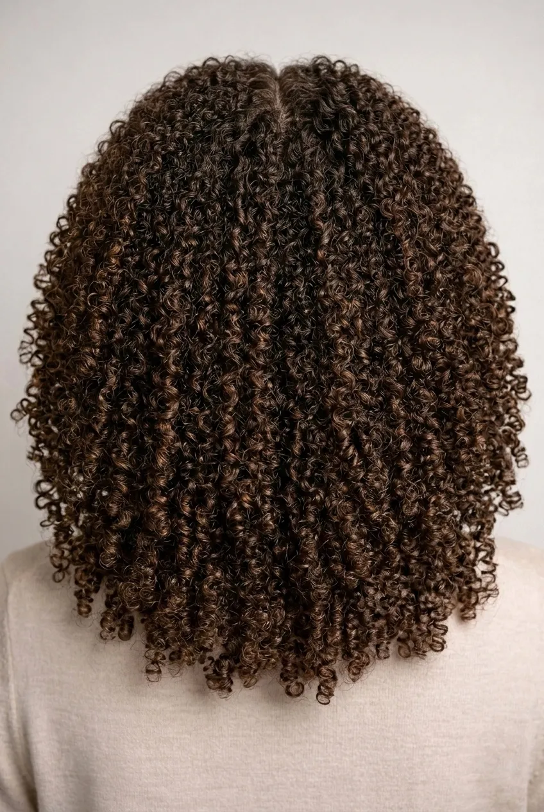
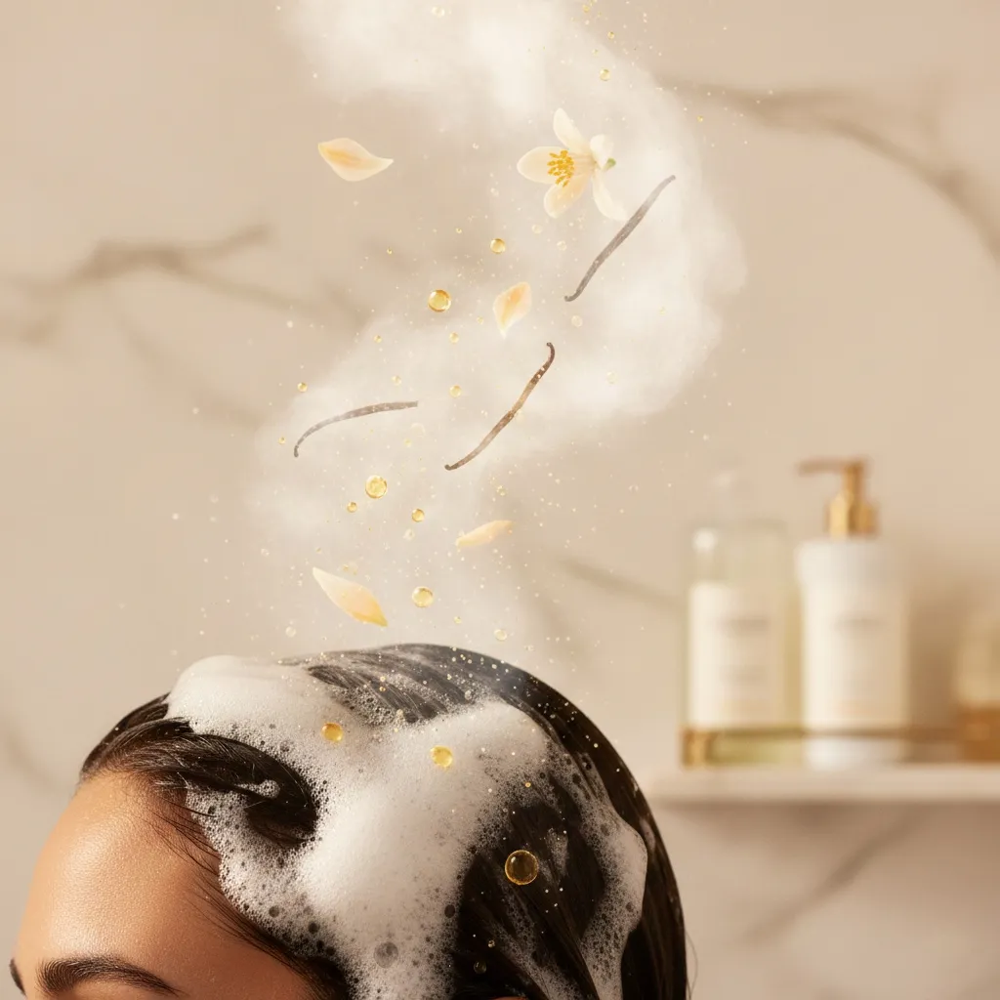

Silk-smooth, strong, and hydrated hair — anytime, for every type.
Discover the dual-use power of Pro-Vitamin B5 and Hydrolyzed Silk.

Zero Silicones
Pure shine without the heavy buildup.

Zero Parabens
Preserved with care for your long-term health.

Cruelty-Free
Never tested on animals.

The Multi-Dimensional Repair
DODCH Pro-V Silk Therapy Mask is infused with Pro-Vitamin B5 and hydrolyzed silk for deep conditioning, hydration, and strength. Use as a rinse-off mask or lightweight leave-in for silky, frizz-free hair — suitable for all hair types.
The DODCH Phenomenon: Dramatic Reflection & The Ethereal Liquid Glass Revolution
Prepare for a total visual transformation. The DODCH treatment isn't just a mask; it is a high-performance intervention designed to drape your hair in an iridescent, liquid-glass veil. We have engineered the ultimate sensory contradiction: a blinding, dramatic gloss that feels as light and airy as a Weightless Feather Cloud.
The Architecture of Infinite Shine
- Dramatic Light Refraction: Our formula utilizes a sophisticated molecular smoothing system that resurfaces every individual strand. By filling in microscopic flaws, it creates a perfectly uniform plane that acts like a mirror, reflecting light with blinding, crystalline intensity.
- The Liquid Glass Seal: We employ a precise pH-locking mechanism that induces immediate cuticle contraction. This creates a high-definition, "liquid" finish that mimics the fluid movement and hyper-glossy sheen of molten glass.
- Anti-Dulling Mineral Defense: Dullness is the enemy of drama. Our specialized clarifying agents strip away the invisible environmental buildup and mineral deposits that sabotage your hair’s natural brilliance, revealing an unapologetic, raw luminosity.

The Feather Cloud: Weightless Softness & Defiant Volume
Ethereal Suppleness
Experience the "Feather Cloud" effect—a texture so plush and light it feels weightless to the touch. While the surface reflects a shattering gloss, the interior remains soft, bouncy, and incredibly resilient.
Gravity-Defying Fluidity
Unlike heavy, waxy treatments that weigh hair down, DODCH provides a high-performance, frictionless glide. Your hair maintains dramatic movement and airy volume, flowing like silk with every turn.
The Invisible Shield
A microscopically thin protective veil seals in hydration while repelling environmental stressors. This ensures your dramatic hair shine remains crisp, aligned, and frizz-free from morning until night.
Zero-Grease. Instant Melt. Professional Results.
When applied as a leave-in therapy, the DODCH formula undergoes a rapid micro-dispersion process. It melts instantly into the hair fiber and dries as if it were never there, leaving absolutely no greasy residue or heavy coating. You receive the full transformative power and professional, salon-quality repair of an intensive mask, wrapped in a weightless finish that simply makes your hair feel incredibly healthy, soft, and alive.
The DODCH Transformation Profile
One application. Absolute brilliance.
Lock in the DODCH "Liquid Glass" finish and experience hair that doesn't just catch the light—it commands it.
Personalized Silk Therapy
Straight Hair (1A–1B)
Benefits
- Smooths the cuticle for ultimate shine
- Adds manageable hydration without weight
- Prevents tangles and static
Usage Tip
Apply a small amount as leave-in on damp hair for lightweight slip and protection.

Wavy Hair (2A–2C)
Benefits
- Enhances natural wave patterns
- Reduces frizz and humidity impact
- Improves slip for effortless detangling
Usage Tip
Use as rinse-off mask for 5–10 min for soft waves, or leave-in for extra definition.

Curly Hair (3A–3C)
Benefits
- Strengthens individual curl strands
- Adds essential hydration and elasticity
- Reduces breakage and split ends
Usage Tip
Focus on mid-lengths and ends; leave-in for curl definition without heaviness.

Coily/Kinky Hair (4A–4C)
Benefits
- Provides deep conditioning and moisture
- Improves strand flexibility and resilience
- Significantly reduces tangles and knots
Usage Tip
Apply generously as rinse-off mask; optional light oil after leave-in for extra sealing.

The Architecture of Silk
BTMS
A plant-derived, eco-friendly conditioning agent that provides unparalleled detangling and a silky sensory feel without buildup.
ConditioningHydrolyzed Silk
Natural silk proteins that form a breathable shield on the hair cuticle, reflecting light for mirror-like shine and smooth texture.
StrengtheningPro-Vitamin B5
Also known as Panthenol, it penetrates deep into the hair shaft to bind moisture, increasing thickness and resilience.
HydrationFounder's Note: For the most dramatic Liquid Glass reflection, apply a pea-sized amount to towel-dried hair rather than soaking wet strands. This ensures the protective shield bonds directly to the fiber without being diluted by excess water, locking in that signature Feather Cloud bounce.
The Ritual of Choice

1. The Rinse-Off Mask
For deep restoration and intensive treatment.
- Apply generously to clean, damp hair.
- Massage through mid-lengths to ends.
- Leave for 5-15 minutes (relax and enjoy).
- Rinse thoroughly with cool water.
2. The Leave-In Therapy
For daily protection, shine, and frizz control.
- Apply a pea-sized amount to damp hair.
- Concentrate on the lower half/ends.
- Do not rinse. Style as usual.
- Apply to dry ends to tame flyaways.
Experience the Silk Transformation
Hand-poured in limited batches to ensure the highest concentration of active silk proteins.